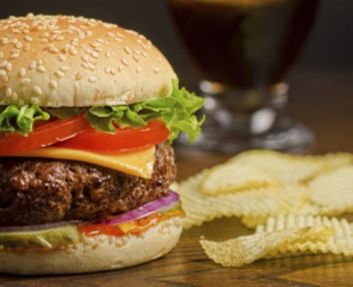
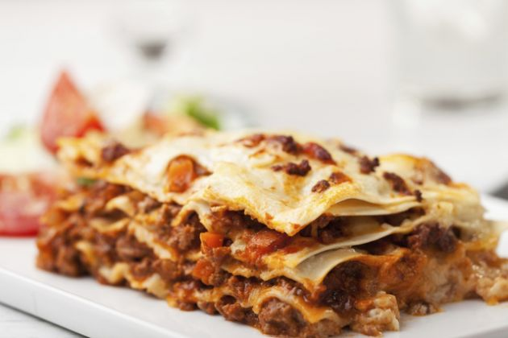
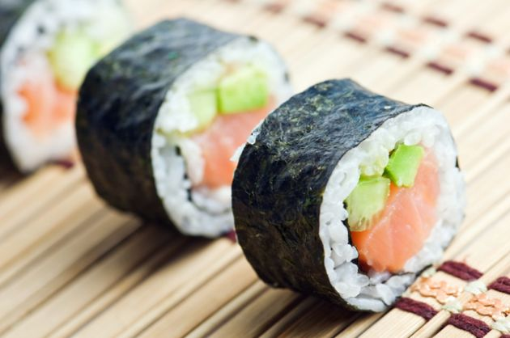

 Las hamburguesas son carne picada comprimida con forma de disco y que, habitualmente, se sirven entre dos panes con verduras y condimentos a gusto. Las hamburguesas son originarias, por supuesto, de Hamburgo, Alemania. Con la gran cantidad de inmigrantes alemanes en tierras norteamericanas, las hamburguesas se hicieron cada vez más populares hasta llegar a ser uno de los 10 platos más famosos del mundo.
Este es uno de los platos más antiguos de la historia. La lasaña es un plato originario del sur de Italia que consta en varias capas de masa básica y entre éstas tradicionalmente se agrega espinaca, carne picada, ricota, salsa de tomate y queso parmesano. Si bien este es el relleno más tradicional de la lasaña, hay muchas variaciones de éste plato, existe la lasaña vegetariana, lasaña dulce, de jamón y queso e innumerables variaciones más.
Este platillo originario de China ha logrado un lugar en muchas regiones orientales y también occidentales. Consiste en carne casi siempre de cerdo o pollo (aunque algunas veces también se hace con carne de pecado), huevos salteados junto con vegetales como repollo y apio. Para cocinar los ingredientes se utiliza un wok, que es una especie de sartén grande y cóncavo. Para darle más sabor, se condimenta con salsa de soja, muy típica de la cocina oriental.
La palabra pizza proviene del latín pinsere, que significa presionar. Seguramente te sorprenda saber que esta comida no es originaria de italia, sino que sus orígenes se encuentran en la antigua Grecia, donde se solía cubrir el pan pita con aceites, hierbas y quesos, aunque claro, prontamente los italianos adoptaron la receta y la perfeccionaron hasta lo que hoy en día llamamos pizza. center>
El sushi es una comida tradicional de Japón que ha logrado dar la vuelta al mundo. Esta comida se basa en arroz cocido con vinagre y en el centro de éste una pieza de pescado crudo o algún fruto del mar. La palabra sushi puede ser traducida al español como “gusto agrio”.